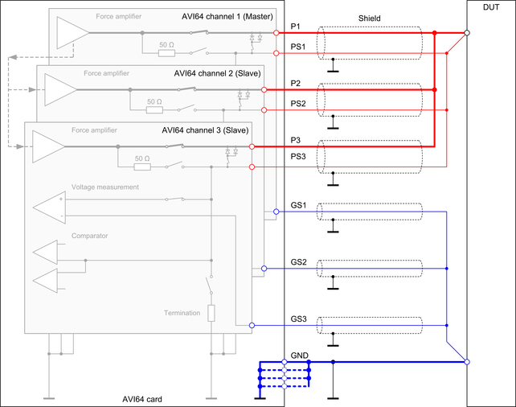

AVI64 ganged wiring
In order to achieve a higher output current, parallel connection of multiple AVI64 PMUs is supported. This is called "ganging". Some electrical design rules must be considered for ganging AVI64 PMUs.
The AVI64 card supports ganging of all channel within groups of eight channels (1 .... 8, 9 ... 16, ...). For SmarTest 8, the card additionally provides maximum eight ganging groups for ganging of arbitrary channels across the complete card. Ganging across cards is not supported.
The pogo pins of the ganged channels must be connected together on the DUT board: A parallel connection is required for the three output pins of the channels (P#, PS# and GS#).
The ground pins (GND) of an AVI64 card are common for all channels. Therefore, the ground pins must be connected to the same ground plane on the DUT board regardless of whether the related channels are ganged or not.
The drawing below shows an example how to wire three ganged channels of an AVI64 card.

The drawing above shows how to connect three ganged channels. The master channel 1 and the two slave channels 2 and 3 are connected together at the DUT pin.
High force (P#)
The high force (P#) pogo pins of the ganged channels must be connected together on the DUT board as shown in the diagram above. The DUT board layout must consider the maximum combined current of the ganged channels.
The force lines from the pogo pins of the individual channels to the point where the force lines are connected together should have the same path resistance. This will harmonize the regulation behavior of the ganged channels.
High sense (PS#) and ground sense GS#
The high sense (PS#) pogo pins and the ground sense (GS#) pogo pins of the ganged channels must be connected together on the DUT board as shown in the diagram above. The connection from the sense lines to the force lines or the common ground should be made directly at the DUT to ensure a sufficient voltage regulation and measurement.
Ground (GND)
The GND pins are the common ground and return path for all channels of an AVI64 card. The GND pins must be connected to a common ground plane of the DUT board. All GND pins must be connected in parallel to ensure that the specifications for the card and the maximum ratings for the pogo pins are met.
Functional changes
- Introduced in SmarTest 7.4.0 / 8.1.0